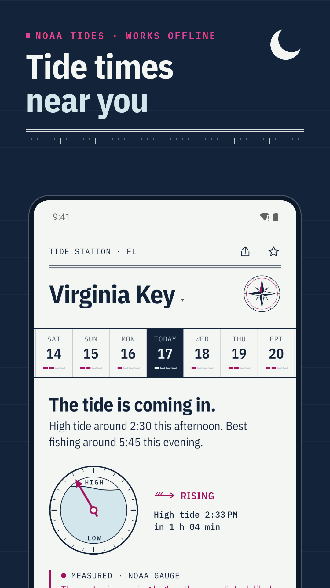
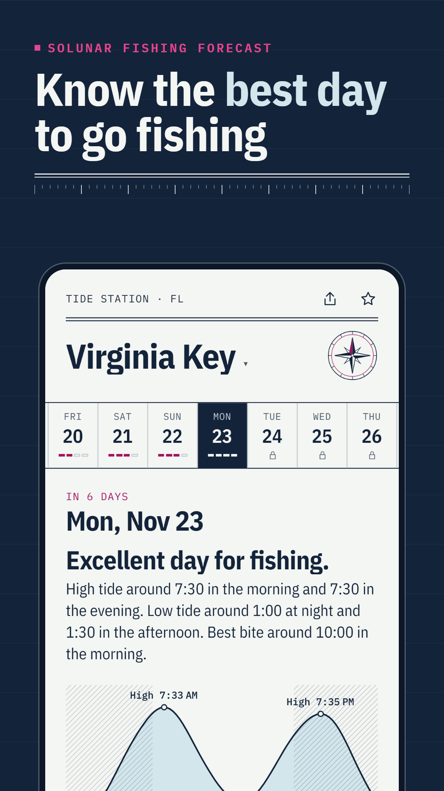
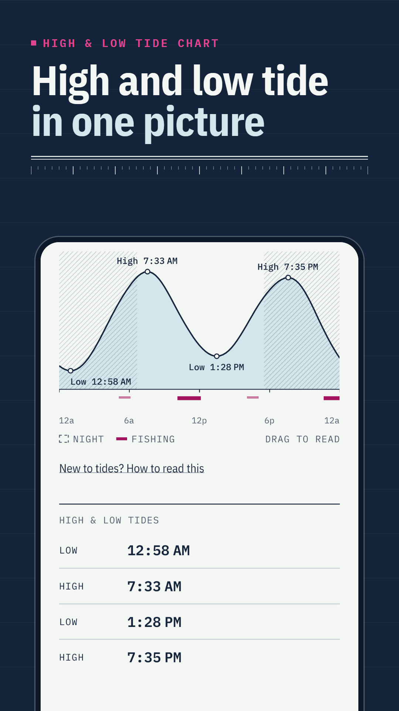
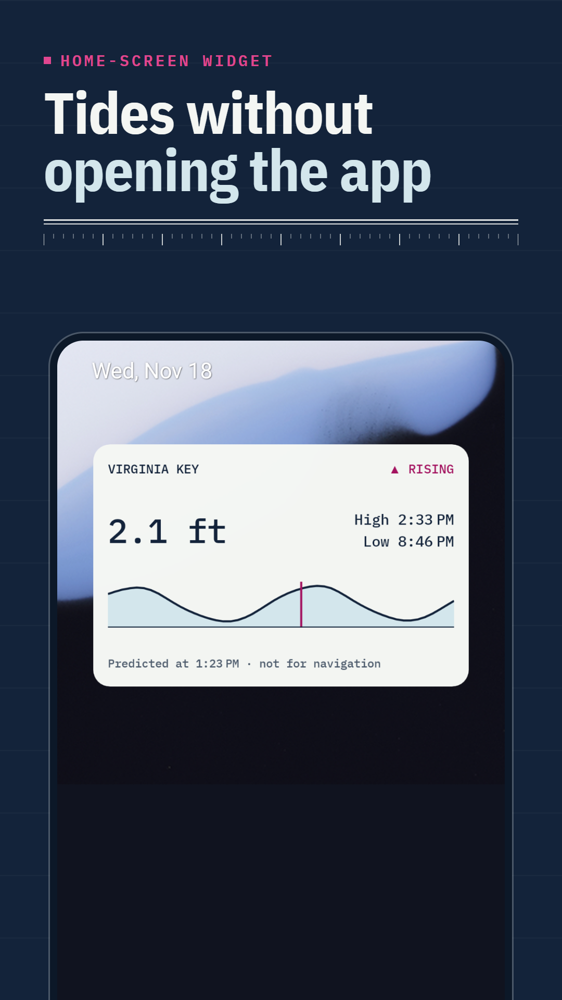

NOAA tides · works offline
Tide times near you, in plain English.
High and low tide, the tide chart and the best fishing times for 3,200 NOAA stations across the US. Calculated on your phone, so it works on the boat with no signal.
Get it on Google PlayFree for Android, supported by ads. Tide tables for every station: tides.samridhashrestha.com.np

- 3,200NOAA tide stations
- 5,600coastal towns to search
- 0bars of signal needed
- 7days ahead, free
Read the tide at any minute
Example station · pick a day, drag the chart, drag your level
Major bite time Minor bite time Your level
Illustrative curves, not a real station; the moon starts at tonight's real phase. The app does this with NOAA predictions for your nearest of 3,200 stations.
What it does
Tide times in words
"The tide is coming in. High tide around 2:30 this afternoon." A tide clock and a countdown to the next high or low.
A tide chart you can read
Drag along the chart to read the water level at any minute, with night shading and fishing periods marked.
Best fishing times
Solunar bite times for every day and a rating from slow to excellent, so you can pick the best day this week.
Tides near you
The nearest station from your approximate location (never uploaded), or search 5,600 coastal towns.
Live NOAA water level
At gauged stations, today's measured level next to the prediction, so you see when wind pushes the water up.
Alerts and widget
A heads-up before high or low tide, an alert when the water crosses your level, and a home-screen widget.
Screens



Questions
Does it work offline?
Yes. Every tide prediction is calculated on your phone. Only the live gauge reading and ads need a connection.
Where does the tide data come from?
NOAA CO-OPS harmonic constants (public domain), via the open Neaps tide database. Our times are checked against NOAA's published tide tables.
Is it free?
Yes, supported by Google AdMob ads. Seven days ahead are free; one optional short video unlocks 30 days for 24 hours. See the privacy policy.
Can I use it for navigation?
No. Tide times are predictions; wind, pressure and storms change the real water level. Check official sources and the conditions you can see.
Is there an iPhone version?
Not yet. It's Android only for now.